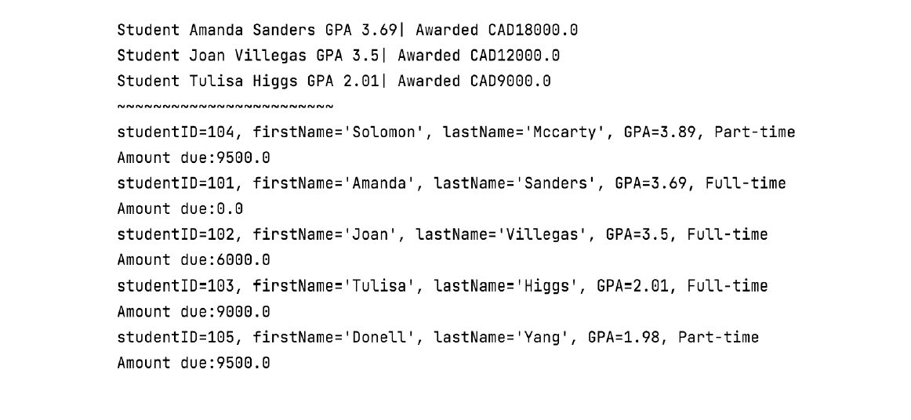

Throughout the course of my university career, I have worked on a number of projects. Some of them were done for specific classes, others were done in my spare time. Here are a few of them!
| Implementing Various Data Structures | Student Information Application |
|---|---|
|
 |
| I wrote a program in Java that was able to create and utilize one of several different kinds of data structures based on the user's choice. These data structures included Linked Lists, Stacks, Queues, Min Heaps, and Binary Search Trees. A text-based interface was implemented that allowed the user to interact with the program, and various functions could be executed with each data structure. For example, if the user chose the Stack data structure, three options were available: Push, Pop, and Print Stack. All of these data structures were developed manually and from scratch without using any built-in libraries that may be related to them. | A program that took certain pieces of information related to students, like their name, GPA, tuition, and status, and printed that information for the user. The program would also calculate and display how much money the students owed to the university, as well as any scholarship money the students may have had awarded to them. |